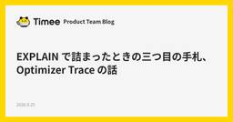

直近1週間の人気フィード
はてなブックマーク数を元に新着優先で並べ替え

EXPLAIN で詰まったときの三つ目の手札、Optimizer Trace の話 91
91 Timee Product Team Blog
Timee Product Team Blog
はじめに こんにちは。プラットフォームエンジニアリングチームに所属している徳富(@yannKazu1)です。 MySQL が遅いとき、まず EXPLAIN で計画を見る。見積もりが怪しければ EXPLAIN ANALYZE で実測と突き合わせる。たいていのケースはこの二つで十分で、実際自分もそれで困ったことはほとんどありませんでした。 ところが先日、この二つをいくら眺めても答えが出ない場面に当たりました。最後に頼ったのが Optimizer Trace でした。普段のチューニングではまず使わないので、すっかり引き出しの奥にしまっていた手札です。そこに至るまでの経緯も含めて書いておきます。 まず…
1日前

Claude Codeが「AGENTS.md」に対応。CLAUDE.mdが存在しない場合、自動的に読み込み 152 Publickey
Publickey
Anthropicは、Claude Codeの9月18日付けアップデートClaude Code 2.1.277で「AGENTS.md」の読み込みに対応したことを明らかにしました。 以下のように説明されています。 Added AGENTS...
3日前

Go言語で書かれた高速なIDE「Rune」、オープンソースで公開。ターミナルとコマンドプロンプト中心の開発環境、複数リモートノードをローカルのように操作可能 67 Publickey
開発ツールベンダのUnstablebuildは、Go言語製のIDE「Rune」をオープンソースで公開したことを発表しました。 Runeの画面 RuneはGo言語によるネイティブアプリケーションとして提供される高速なIDEです。GPUによる描...
2日前
Cloudflare、Python Workersを正式サービスに。PythonでWebサイトの構築、データベース接続、オブジェクトストレージ操作など 103 Publickey
Cloudflareは、同社のサーバレス実行基盤上でPythonを実行できる「Python Workers」が正式サービスになったことを発表しました。 JavaScriptによるサーバレス実行基盤のCloudflare Workers上でW...
3日前

技術選定の現場から「AIにも人間にも最適なWebフレームワークはどれ？」 34 KAKEHASHI Tech Blog
KAKEHASHI Tech Blog
前置き こんにちは。カケハシでソフトウェアエンジニアをやっているogijunこと荻野です。前回は言語オタク語りをしてしまいましたが、今回はもう少し実務っぽい、技術選定の話です。と言いつつよくある技術選定とはちょっと違うかもしれません。 先日、社内向けの小さいアプリを作ることになりました。使う人は特定部署の十数人、画面は数枚、API は十数本、データはせいぜい数十万件、という規模です。SPA 風のリッチな編集機能もあると便利そう。新規開発で縛りはないので、社内で標準的な Python と TypeScript を使って、少人数でさっと作れるのが理想です。 このくらいの規模だと、技術選定にじっくり…
3日前
AWS サービスの EoL 情報をまとめた JSON データセット「aws-service-eol-data」を試してみた 3 DevelopersIO
DevelopersIO
aws-service-eol-data は、AWS サービスのバージョンごとの EoL 情報を 1 つの JSON にまとめたデータセットです。RDS・Aurora MySQL を例に、終了日と終了後の挙動を jq で抽出し、Kiro CLI にも渡してみます。
1日前
対応工数を半減、リードタイムを6日から1日に ── Dify・Claude Code・Devinを束ねたSlack問い合わせ自動化 3 ZOZO TECH BLOG
ZOZO TECH BLOG
はじめに こんにちは。検索基盤ブロックのXEIです。私たちのチームには、ZOZOTOWNの検索に関する問い合わせが社内から日々寄せられます。 本記事では、この問い合わせ対応を複数のAIエージェントの組み合わせでどう効率化したかを紹介します。読み終わる頃には、役割を分けたAIエージェントをどう組み合わせ、人間の関与をどこに残すと問い合わせの件数を維持したまま対応の負荷を下げられるのか、その設計の勘所を持ち帰っていただけるはずです。なお、本記事は「問い合わせに回答する」部分に絞り、管理・運用の自動化は扱いません。
3日前
商用利用無料！ ほっこりとした癒やし系フリーフォント、お母さまの手書き文字をベースにした -おかんのてがみ 3 コリス
コリス
ほっこりとした癒やし系、手書きの日本語フリーフォントを紹介します。 「おかんのてがみ mini」はひらがな・カタカナをはじめ、英数記号文字の全361文字が収録されており、縦書きにも対応しています。 おかんのてがみ min […]
3日前

Claude Codeで定期的にやっておきたい MEMORY.md の大掃除 3 株式会社ログラス テックブログのフィード
株式会社ログラス テックブログのフィード
!この記事は毎週必ず記事がでるテックブログ Loglass Tech Blog Sprint の162週目の記事です！4年間連続達成まで残り50週となりました！ 溜まったメモリ、放置していませんか？Claude Code（Anthropic のコーディングエージェント）の自動メモリは、気づかないうちに埃のように溜まっていきます。同じリポジトリで Claude Code を起動して作業していると、指摘を受けるたびにそのリポジトリのメモリへ少しずつ情報が書き足されていくためです。人間が気づいて CLAUDE.md や .claude/rules に整理したものは良いのですが、...
3日前

Next.js vs TanStack Start の違いを10項目で検証してみた 4 Zennの「frontend」のフィード
はじめにこの記事では、Next.js と TanStack Start を、実際にコードを書きながら 10項目 で比較検証します。Next.jsは、Vercel社が開発し、App Router / RSCといった特徴を持つReactフレームワークです。一方TanStack Start は TanStack Router と Vite をベースにしたフルスタック React フレームワークです。結論を先に書くと、エコシステムが成熟・高パフォーマンス・安定運用を重視するならNext.js型の一貫性・デプロイ先の自由度を重視するならTanStack Startという分類に...
4日前